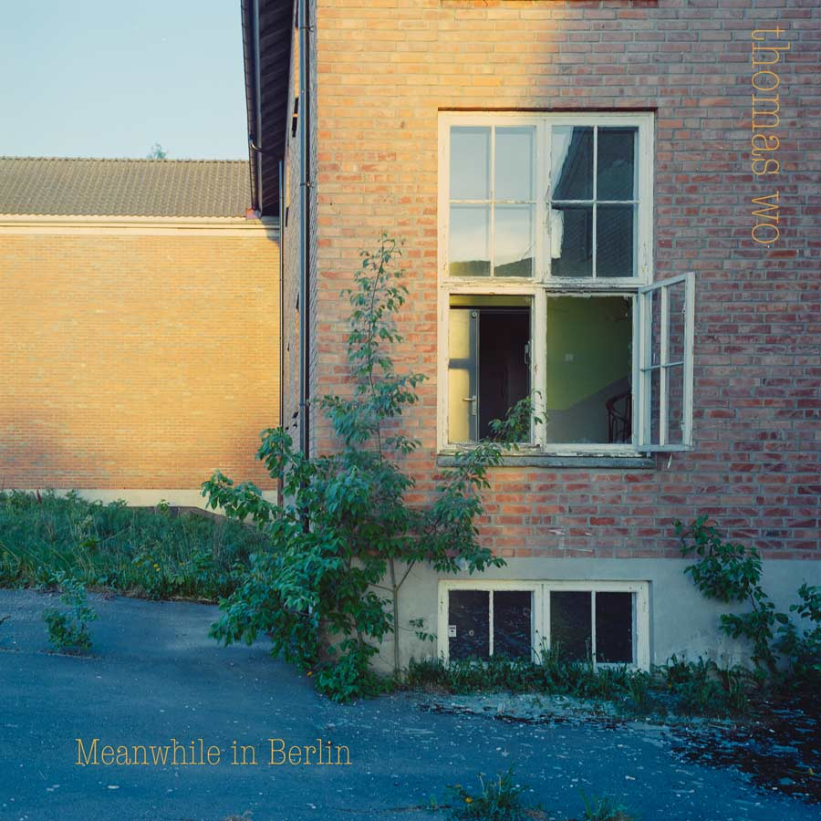
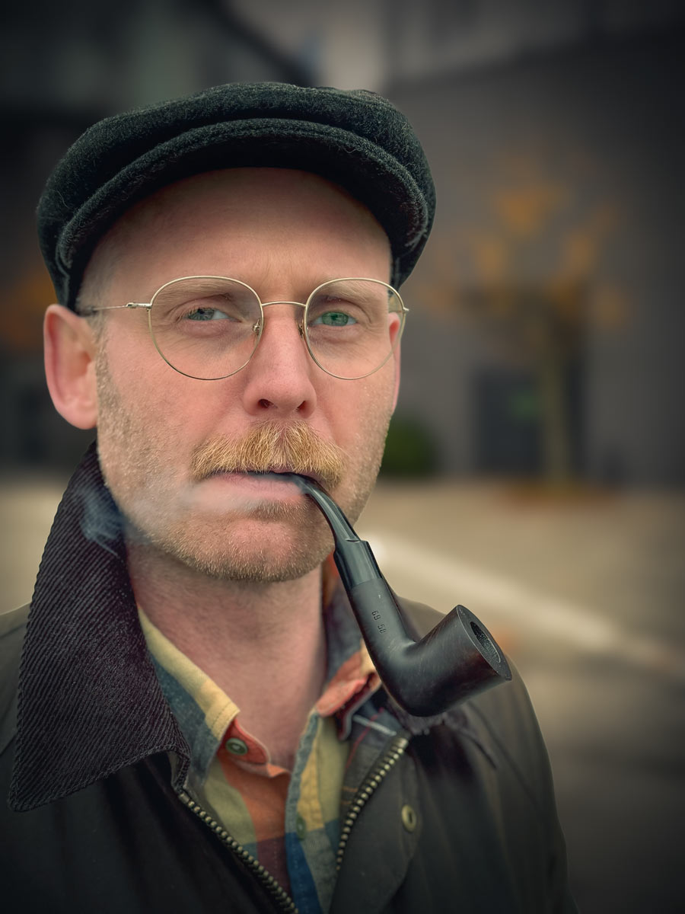

|
|
|
Welcome
Thomas WO (Thomas Winje Øijord) composes experimental music from field recordings, analog effects and synthesis, and live instruments. He also writes fiction and non‑fiction, and works as a documentary‑style photographer/videographer.
$1
Latest release: Meanwhile in Berlin (2024)
"Meanwhile in Berlin" ironically spends most of its time in Norway, wandering through forests and city streets with a microphone and questionable recording techniques. Artist Thomas WO (Thomas Winje Øijord) combines these found sounds - from hydrophones in frozen lakes to confused urban encounters - with synthesizers and live instruments, creating an experimental ambient collection that probably takes itself too seriously. The result is a rubato sound field where environmental recordings, electronic textures, and acoustic instruments drift and repeats, occasionally making sense. One track actually made it to Berlin, but the rest is pure Norwegian sonic overthinking at its finest.
Listen: Bandcamp
$1
$1
Thomas WO (Thomas Winje Øijord) is a musician who creates experimental compositions based on field recordings and sound scapes, live instruments, analog effects and synthesis. Through layered environmental sounds and electronic textures, his work explores the intersection of natural acoustics and constructed sonic environments, visiting contemplative audio spaces where the familiar meets the rest of us.
Thomas is also a writer of fiction and non-fiction. Published by the largest publishing houses in Norway.
And a professional documentary style photographer/videographer.
Writing (fiction & non‑fiction). Documentary‑style photography/video: epalo.no.
Label: Gi Faen Records
Literary agency: Winje Agency
Contact
Email: post@tekstfoto.no
| © Thomas Winje Øijord |
Best viewed at 800×600 or higher |
|
|